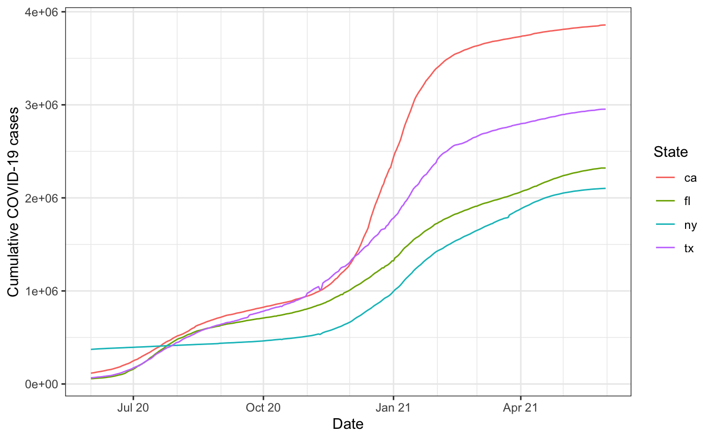
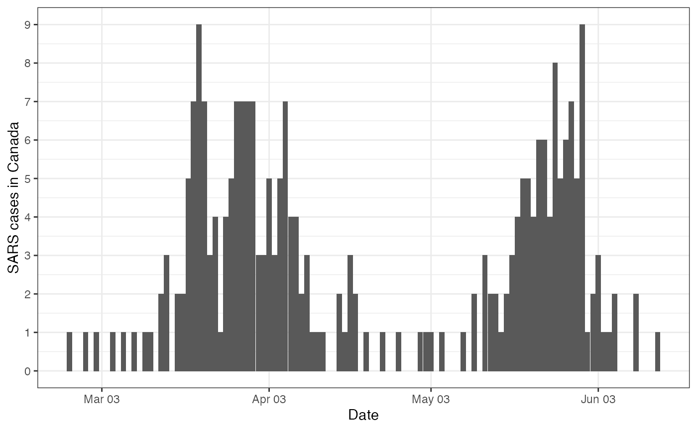

This package provides tools for basic signal processing tasks in epidemiology, which includes computing percentage changes in signals, estimating derivatives, and computing correlations.
This package is not on CRAN yet, so it can be installed using the devtools package:
devtools::install_github("cmu-delphi/epitools", ref = "main") Building the vignettes, such as this getting started guide, takes a significant amount of time. They are not included in the package by default. If you want to include vignettes, then use this modified command:
devtools::install_github("cmu-delphi/epitools", ref = "main",
build_vignettes = TRUE, dependencies = TRUE)epi_signal formatWe’ll start by showing how to get data into epi_signal format, which is just a tibble (data frame) with a bit of special structure, and is the format assumed by all of the functions in the epitools package. An epi_signal object has (at least) the following columns:
value: the value of the signal;geo_value: the associated geographic value;time_value: the associated time value;issue: the time value at which the given signal value was issued.A data frame or tibble can be converted into an object of class epi_signal, using as.epi_signal(), provided that it has (at least) the first 3 columns in the above list (if an issue column is not present, then today’s date is used for the issue dates). To learn more about the epi_signal format, you can read the documentation for as.epi_signal().
As an example, we’ll look at daily cumulative COVID-19 cases for 4 states (CA, FL, NY, and TX) in the U.S., over a year from mid 2020 to mid 2021, using the covidcast package to
fetch this data from the COVIDcast API.
library(covidcast)
case_data <- covidcast_signal(data_source = "jhu-csse",
signal = "confirmed_cumulative_num",
start_day = "2020-06-01",
end_day = "2021-5-31",
geo_type = "state",
geo_values = c("ca", "fl", "ny", "tx"))
class(case_data)## [1] "covidcast_signal" "data.frame"
colnames(case_data)## [1] "data_source" "signal" "geo_value"
## [4] "time_value" "issue" "lag"
## [7] "missing_value" "missing_stderr" "missing_sample_size"
## [10] "value" "stderr" "sample_size"As we can see, a data frame returned covidcast::covidcast_signal() has the columns listed above that are required of an epi_signal object (along with many others). A call to as.epi_signal(), with further specification of a few relevant pieces of metadata:
name: a name for the current signal;geo_type: the geographic resolution;time_type: the time resolution;then brings such a data frame into epi_signal format.
library(epitools)
library(dplyr)
x <- as.epi_signal(case_data,
name = "covid19_cases",
geo_type = "state",
time_type = "day") %>%
select(value, geo_value, time_value, issue)
class(x)## [1] "epi_signal" "tbl_df" "tbl" "data.frame"
summary(x)## An `epi_signal` data frame with 1460 rows and 4 columns.
##
## name : covid19_cases
## geo_type : state
## time_type : day
##
## first time value : 2020-06-01
## last time value : 2021-05-31
## median number of geo values per time value : 4
head(x)## # A tibble: 6 × 4
## value geo_value time_value issue
## <dbl> <chr> <date> <date>
## 1 116160 ca 2020-06-01 2021-09-27
## 2 56830 fl 2020-06-01 2020-10-14
## 3 374818 ny 2020-06-01 2020-12-30
## 4 65732 tx 2020-06-01 2021-01-08
## 5 118532 ca 2020-06-02 2021-09-27
## 6 57447 fl 2020-06-02 2020-10-14
attributes(x)$metadata## # A tibble: 1 × 3
## name geo_type time_type
## <chr> <chr> <chr>
## 1 covid19_cases state dayAs far as the metadata goes, while a signal name must be specified in a call to as.epi_signal(), the geo_type and time_type arguments can omitted and, in this case, as.epi_signal() will try to guess them from the data.
x <- as.epi_signal(case_data, name = "covid19_cases") %>%
select(value, geo_value, time_value, issue)
attributes(x)$metadata## # A tibble: 1 × 3
## name geo_type time_type
## <chr> <chr> <chr>
## 1 covid19_cases state dayData in epi_signal format is pretty easy to work with downstream; in the other vignettes, we’ll walk through some basic signal processing tasks using functions provided in the epitools package; of course, we can also write custom code for for other downstream uses, like plotting, which is pretty easy to do ggplot2.
library(ggplot2)
theme_set(theme_bw())
ggplot(x, aes(x = time_value, y = value, color = geo_value)) +
geom_line() +
scale_x_date(minor_breaks = "month", date_labels = "%b %y") +
labs(x = "Date", y = "Cumulative COVID-19 cases", color = "State")
Now we give an example with just a tiny bit of data wrangling required in order to get outside data into epi_signal format. We’ll examine data from the outbreaks package, on daily new (not cumulative) SARS cases in Canada in 2003.
head(outbreaks::sars_canada_2003)## date cases_travel cases_household cases_healthcare cases_other
## 1 2003-02-23 1 0 0 0
## 2 2003-02-24 0 0 0 0
## 3 2003-02-25 0 0 0 0
## 4 2003-02-26 0 1 0 0
## 5 2003-02-27 0 0 0 0
## 6 2003-02-28 1 0 0 0
x <- outbreaks::sars_canada_2003 %>%
mutate(value = cases_travel + cases_household + cases_healthcare + cases_other,
geo_value = "ca") %>%
rename(time_value = date) %>%
select(value, geo_value, time_value) %>%
as.epi_signal(name = "sars_canada", geo_type = "nation")
head(x)## # A tibble: 6 × 4
## value geo_value time_value issue
## <int> <chr> <date> <date>
## 1 1 ca 2003-02-23 2021-10-15
## 2 0 ca 2003-02-24 2021-10-15
## 3 0 ca 2003-02-25 2021-10-15
## 4 1 ca 2003-02-26 2021-10-15
## 5 0 ca 2003-02-27 2021-10-15
## 6 1 ca 2003-02-28 2021-10-15
ggplot(x, aes(x = time_value, y = value)) +
geom_col(aes(y = value)) +
scale_x_date(minor_breaks = "month", date_labels = "%b %y") +
scale_y_continuous(breaks = min(x$value):max(x$value)) +
labs(x = "Date", y = "SARS cases in Canada")